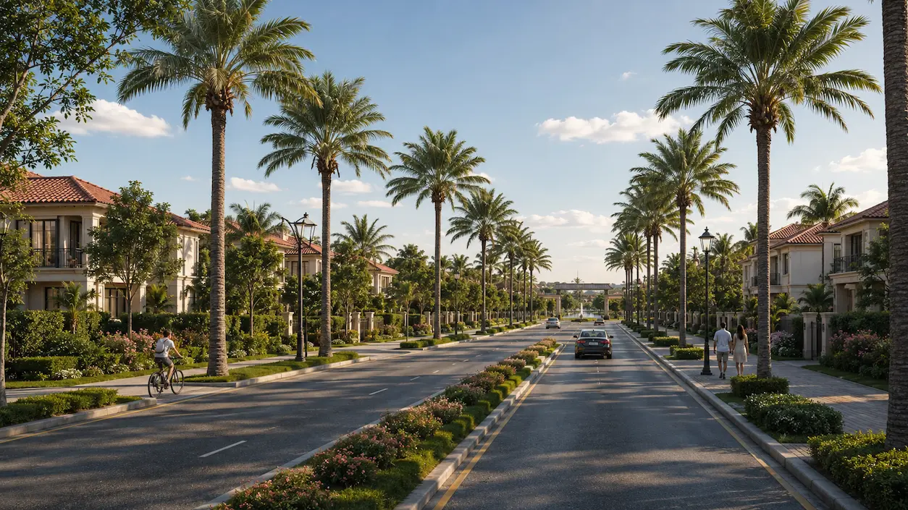

A mixed-use development puts homes, shops, offices, hotels and leisure on one site, so people can live, work and spend their evenings without getting in a car. Done well, it becomes a neighbourhood. Done badly, it becomes several buildings that happen to share a car park.
Mixed use is one of the fastest-growing formats in Indian real estate. Developers like it because it spreads risk and brings in both sales and rental income. Cities like it because it shortens trips and keeps streets busy through the day. The design challenge is making very different uses share one site without getting in each other's way.
This guide explains how to design a successful mixed-use development in India. It covers the business case, choosing the mix, the rules, stacking and site planning, access, the public realm, services, phasing and what a specialist mixed-use consultant does. It builds on our guide to large land parcel planning, which covers how big sites are tested before design.
What Is a Mixed-Use Development?
The Uttar Pradesh Building Regulations, 2026, which apply to NOIDA, Greater Noida, YEIDA and the state's other industrial development authorities, describe mixed-use development as one that integrates residential, commercial, institutional and recreational spaces within a single structure, land parcel or neighbourhood. They also note the benefits: better use of land, shorter trips, more sustainable transport and livelier, safer public areas.
Mixed-use projects come in three broad forms:
- Vertical mixed use. Different uses stacked in one building, such as shops at ground level, offices above and homes or a hotel at the top.
- Horizontal mixed use. Separate buildings for each use on one site, linked by streets, plazas and shared parking.
- Integrated townships. Large sites with housing, retail, offices, schools, healthcare and leisure planned together. Our guide on how to plan a township covers that scale.
Why Mixed Use Is Growing in India
The business case is strong. Business Standard reported in April 2026 that developers are turning to mixed use to maximise returns, use land efficiently and diversify cash flow. Residential components bring early cash through sales, while commercial, retail and hospitality bring long-term rental income. The same report quotes Anarock's chairman saying mixed-use properties can deliver 20 to 25 per cent higher returns than single-use assets, and notes that about 35 to 40 per cent of urban real estate supply in India is expected to be mixed use by 2030.
Land markets show the same shift. According to Anarock data in the same report, eight major land deals covering 1,045 acres in 2025 were earmarked for mixed-use development. Cushman & Wakefield reports that mixed-use land transactions grew 2.6 times between 2021–22 and 2024–25. The format is also moving beyond the largest cities into tier-2 and tier-3 markets along new metro lines and expressways. For single-company sites, see our guide to corporate campus architecture.
Choosing the Right Mix
The mix is the most important decision in a mixed-use project, and the market should set it.
- Start with an anchor. One use usually carries the project, such as offices on a business corridor, housing in a growing suburb or a hotel near an airport or temple town. Other uses support it.
- Pair uses that help each other. Offices feed lunchtime trade to restaurants. A hotel uses the same banquet hall as local weddings. Homes bring evening and weekend life to shops.
- Spread activity across the day. Offices are busy by day, restaurants and leisure by evening, homes at night and weekends. A good mix keeps the site lively for more hours and lets parking be shared.
- Separate uses that clash. Nightclubs and bedrooms, loading bays and school gates, restaurant kitchens and apartment windows all need distance or careful design.
- Leave room to change. Markets shift during a long development. Floor plates and parcels that can switch between uses reduce risk.
| Use | What it brings | What it needs |
|---|---|---|
| Residential | Early sales cash, evening and weekend life | Privacy, quiet, safe entrances, green space |
| Office | Rental income, daytime footfall | Efficient floor plates, parking, good access |
| Retail and F&B | Street life, convenience for residents | Visibility, frontage, loading, kitchen exhaust |
| Hotel or serviced apartments | Rental income, brand value, banquet trade | Arrival court, back-of-house, separate lifts |
| Leisure and banquet | Destination appeal, evening trade | Large column-free spaces, event parking, sound control |
The Rules: Where and How Much
Mixed use is controlled by the master plan and building regulations of each city. The Uttar Pradesh Building Regulations, 2026 give a clear example of how these rules work. Chapter 9 allows mixed-use development in four kinds of location:
- Mixed-use zones earmarked in the master plan.
- Mixed-use plots identified in approved layouts.
- Plots along roads 30 metres or wider, including layouts approved by the Authority.
- Transit Oriented Development zones.
For plots along 30-metre roads, the principal use must take at least 33 per cent of the floor area, other uses up to 67 per cent, and no single other use can be larger than the principal use. Setbacks follow the requirement for the higher use, and parking is calculated according to the share of each use. Mixed-use buildings in notified mixed-use zones and approved layouts get a base FAR of 2.5, with purchasable FAR raising the maximum on wider roads. Development and impact fees on mixed-use plots along 30-metre roads are charged at the highest category of use.
Parking by use
Because parking is worked out separately for each use, the mix directly changes the size of the car park. The same regulations set parking in Equivalent Car Spaces (ECS), for example:
| Use | Parking requirement (UP regulations, 2026) |
|---|---|
| Shopping complex | 1 ECS per 50 sq m of proposed FAR |
| Office buildings, including IT | 2.0 ECS per 100 sq m of proposed FAR in metros, 1.5 elsewhere |
| Hotels and service apartments | 1.25 ECS per 100 sq m of proposed FAR |
| Other commercial | 1.25 ECS per 100 sq m of proposed FAR in metros, 1.0 elsewhere |
Other states and cities have their own rules, so check the current master plan, zoning and bye-laws for your city before fixing the mix. For plotted housing in Noida, our Noida architects page summarises what the same 2026 regulations allow on residential plots.
Stacking and Site Planning
Vertical stacking
In a vertical scheme, the usual order is retail and F&B at street level, offices or a hotel in the middle, and homes at the top where views are best and noise is lowest. Each use wants a different structure. Shops want wide open spans, parking wants a grid that suits cars, offices want deep, flexible floor plates and homes want smaller rooms with windows. Where one structural grid sits on another, transfer beams or slabs carry the load, and they are expensive. Planning a grid that works for every use, or limiting transfers to one level, keeps that cost down.
Horizontal planning
On larger sites, giving each use its own building makes construction, phasing and sale simpler. The real design work is in the spaces between: streets, plazas and gardens that link the buildings and make the site feel like one place.
The podium-and-tower model
Many Indian schemes use a podium for retail, parking and amenities, with towers for offices, homes or a hotel above. It works well when the podium roof becomes usable space, such as gardens, a pool deck or a clubhouse, rather than a bare slab.
Access, Entrances and Circulation
Every use needs its own front door. Residents do not want to walk through a mall to reach the lift. Hotel guests expect a proper arrival court. Office tenants need a lobby that can handle the morning rush.
- Separate entrances and lobbies for homes, offices and the hotel, each with its own lifts.
- Separate service access with loading bays, refuse rooms and service lifts that do not cross public areas.
- Parking zoned by use, with secure residential parking separated from public and office parking, and shared parking where uses peak at different times.
- Fire separation between uses, with exits and fire safety systems designed to the requirements for each occupancy.
- Security layers, so the public can use the shops and plazas while homes and offices stay controlled.
Hotels in a mixed-use scheme need the same care as standalone ones. Our guides to hotel lobby design and hotel back-of-house planning explain the arrival and service routes involved. For long-stay units, see our guide to serviced apartment architecture.
Designing the Public Realm
The spaces between buildings decide whether a mixed-use project feels alive. Monocle's ten principles for mixed-use spaces include several that apply directly in India:
- Do not block the site. Avoid one impenetrable structure across a whole block. Shrink footprints and create routes through the site that improve pedestrian connections.
- Design for human scale at street level. Rich detail on the lower floors, and clear differences between public and private entrances.
- Let restaurants front onto plazas. Outdoor seating spills into public space and keeps it busy.
- Add greenery. Street trees and planting cool the air and improve wellbeing.
In Indian cities, shade matters as much as anything. Arcades, colonnades, deep canopies and tree-lined streets make the public realm usable through hot afternoons and monsoon showers. Water features, seating and good evening lighting give people reasons to stay.
Services, Noise and Smell
Mixed use puts neighbours closer together than single-use buildings do, so services need careful planning.
- Kitchen exhaust. Restaurant exhausts should rise above the roof or discharge away from windows and terraces.
- Acoustic separation. Slabs, walls and plant rooms between noisy and quiet uses need sound insulation.
- Separate metering. Each use, and often each tenant, needs its own electricity, water and gas metering for fair billing.
- Shared plant. Central plant for cooling, power backup and water treatment can serve the whole site efficiently, with clear rules for sharing costs.
- Basements. The UP regulations allow uses other than ancillary uses in the basements of mixed-use buildings, provided lighting, ventilation and fire safety requirements are met.
Climate and Sustainability
A mixed-use site is a good place to save energy and water, because different uses can share systems and balance each other's demand.
- Shared cooling. Offices need cooling by day and homes by night. A central plant sized for the combined load can be smaller than separate systems for each building.
- Shade first. Orient towers to limit west-facing glass, shade facades with fins, balconies and screens, and plant trees along streets and plazas.
- Natural ventilation. Podiums and atriums planned with openings and courtyards need less mechanical ventilation.
- Water reuse. Treated wastewater from homes and the hotel can flush toilets and irrigate the landscape across the site.
- Solar on the roofs. Podium roofs, parking canopies and tower tops can carry solar panels.
Our guide to climate-responsive hotel design explains these strategies in more detail.
Phasing and Finance
Mixed-use projects are usually built in phases, and the sequence affects cash flow. Residential sales often fund the early phases, while commercial and hospitality components are built when the location matures and tenants commit. Infrastructure, access roads and the first public spaces should come early, so the site feels finished from the first handover.
Keep later phases flexible. A parcel planned for offices may suit housing or a hotel five years later. Reserve service capacity, parking and access for the full build-out from the start, so later phases do not need costly upgrades.
What a Mixed-Use Development Consultant Does
Mixed-use projects bring together uses that are normally designed by different specialists. A development consultant or lead architect keeps them working as one project. The role usually includes:
- Feasibility and mix. Testing the site, the market and the rules to find a mix that is legal, buildable and sellable.
- Master planning. Placing uses, access, parking and public space, and setting the phasing.
- Regulatory strategy. Working through land use, FAR, parking and fire rules for each use, and the approvals sequence.
- Design coordination. Keeping structure, services and interiors consistent across uses and phases.
- Operator input. Bringing in hotel, retail and office operators early, so their needs shape the plan.
Our guide to the hotel feasibility study shows how one part of this process works for hospitality.
Mixed-Use Thinking in Our Work
Our studio works across most of the uses a mixed-use project combines: residential and villa communities, offices and commercial buildings, hotels and resorts, banquet venues and clubs. Clients have commissioned us to design and build a commercial complex, and our hospitality work includes The Bliss in Bijnor, a 2-acre banquet and celebration venue with separate guest and service circulation, and Delulu Club in Greater Noida, a 15,000 sq ft rooftop lounge and entertainment terrace. Our township concepts, such as the villa township in New Chandigarh, plan homes, a clubhouse and landscape as one connected place. Mixed use brings these together on one site.

Common Mixed-Use Mistakes
- A wish-list mix. Adding uses because they look good in a brochure, not because the market wants them.
- One shared entrance. Residents, shoppers and office workers all funnelled through the same lobby.
- Structural grids that fight. Costly transfer structures because the parking, retail and residential grids were never aligned.
- Dead frontage. Blank walls, ramps and service doors on the main street.
- Kitchen smells and club noise reaching homes above.
- Infrastructure for phase one only. Later phases need costly upgrades to power, water and access.
- Ignoring the parking maths. Each use has its own parking requirement, and the total can reshape the basement and the budget.
Frequently Asked Questions
What is a mixed-use development?
A mixed-use development combines uses such as housing, retail, offices, hotels and leisure in one building, on one site or across a neighbourhood. The uses share access, parking and public space, and are planned so people can live, work and spend leisure time in the same place.
Why are developers in India building mixed-use projects?
Mixed use combines early sales income from homes with long-term rental income from offices, retail and hotels, which spreads risk. Industry estimates reported by Business Standard suggest mixed-use properties can deliver 20 to 25 percent higher returns than single-use assets, and that 35 to 40 percent of urban supply may be mixed use by 2030.
Where is mixed-use development allowed in Uttar Pradesh?
Under the UP Building Regulations, 2026 for industrial development authority areas such as NOIDA and Greater Noida, mixed use is allowed in mixed-use zones in the master plan, mixed-use plots in approved layouts, plots along roads 30 metres or wider and transit-oriented development zones.
How is parking calculated for a mixed-use building?
Parking is calculated separately for each use according to its share of the floor area. Under the UP regulations, for example, offices need 2.0 equivalent car spaces per 100 sq m of proposed FAR in metros, hotels 1.25 and shopping complexes 1 per 50 sq m.
What does a mixed-use development consultant do?
A mixed-use consultant or lead architect tests the site and market to set the mix, prepares the master plan, works through land use, FAR, parking and fire rules, coordinates the design across uses and phases and brings hotel, retail and office operators in early.
Design One Place, Not Several Buildings
A successful mixed-use development feels like a neighbourhood, with uses that support each other, streets that stay busy and homes that stay quiet. That depends on the right mix, clear access for every use, a public realm people want to use and services planned so neighbours do not disturb each other.
If you are planning a mixed-use project on a city plot, a highway site or a large land parcel, talk to our team about the mix and the master plan.